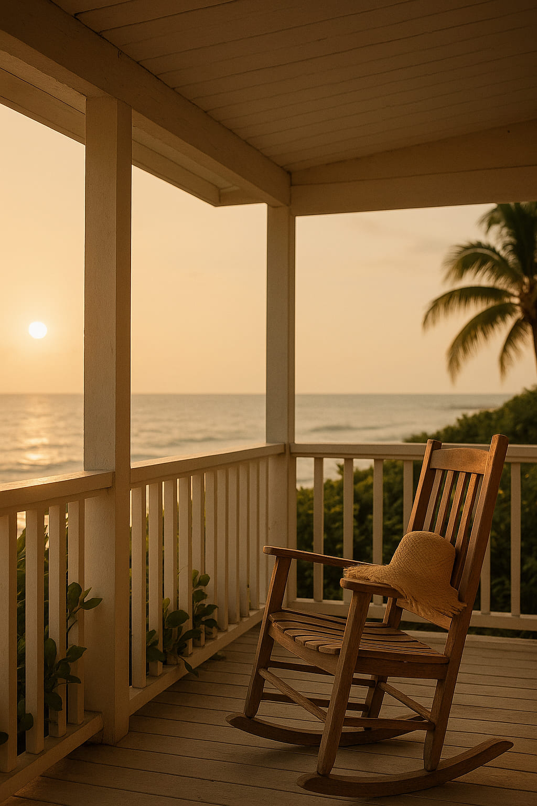
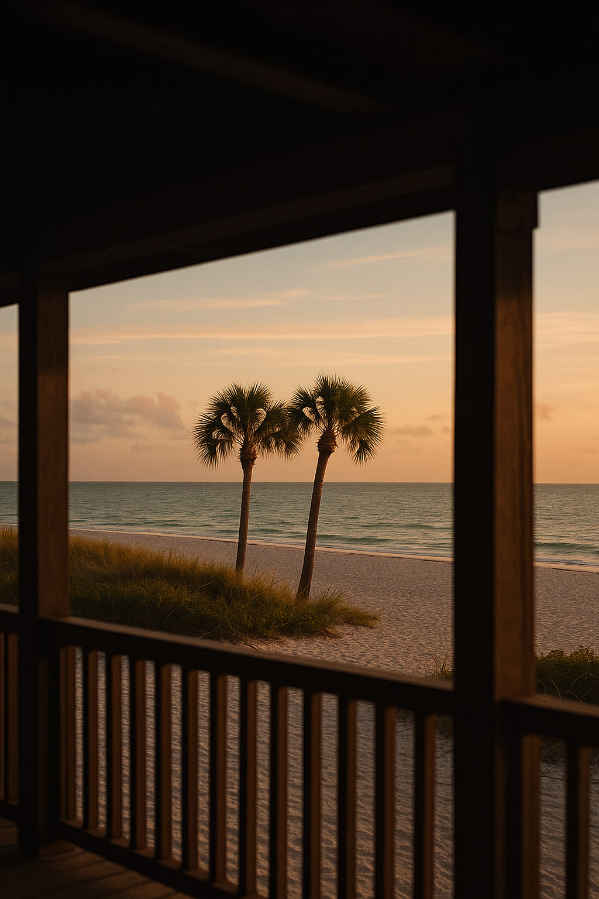

Florida in Layers: A Visual Travel Story
Forget everything you thought about Florida. The fast beaches, the loud crowds, the neon nights. There's another Florida — quieter, warmer, more refined. From the art deco nostalgia of Miami to the pastel stillness of the Keys, this journey is not about speed. It’s about *layers* — visual, cultural, and emotional.
1. Mornings in Miami
Begin where the city meets the sea. Miami’s early hours are a lesson in color theory: sky blues, rose golds, and concrete grays. Walk the coast before 8am, when the city stretches and exhales. Art Deco lines, café windows, and the smell of salt and espresso. It’s not a rush — it’s a rhythm.
2. Layers of Light in Key West
Drive south and let the world simplify. In Key West, the light softens everything — voices, outlines, even time. The ocean isn’t just a backdrop here; it’s the main character. Bring a linen shirt, a worn paperback, and nothing to prove. Style here is practical poetry.
3. The Space Between Stops
Slow travel in Florida means paying attention between cities: coral gas stations, abandoned diners, hand-painted fruit stands. This is where the real style hides — not in boutiques, but in the way locals wear denim and wind. Real fashion, real movement.
4. Orlando: Heat, Color, Utility
Theme parks aside, Orlando offers a strange beauty in its residential edges. Brick walls, orange groves, 90s architecture, and public fountains. Style here is utilitarian and intentional. Sling a bag across your chest, wear breathable fabric, and lean into the unexpected.
5. Style as Climate
Florida fashion is not driven by season. It’s driven by sky. Rain? It shifts. Humidity? It breathes. The real travel wardrobe isn’t a suitcase — it’s adaptability. Neutrals, textures, soft volume, and the occasional sharp line.
"Style in Florida is not worn — it's lived."
6. Coastal Ends, Clean Starts
End your journey in Naples or St. Augustine. Look for the sea through window frames, between palm trunks, under balcony shadows. You don’t need souvenirs — the sunlight will stay with you. The color palette, the pace, the softness — they become yours now.
Words by Style Atlas